Мастер «Добавить устройство» — вкладка поиска в сети
Описание по интерактивному макету. Ручное добавление и импорт CSV в этот документ не входят.
1. Открытие мастера и сетевой поиск
Назначение. С контекста сервера в дереве открыть полноэкранный мастер, автоматически опросить сеть и показать найденные IP-устройства в виде списка карточек для дальнейшей настройки и добавления на выбранный сервер.
Где смотреть: «Оборудование» → выбранный сервер → «+ Добавить устройство» (дерево, шапка карточки или таблица камер). Открывается мастер с заголовком «Добавить устройство» и вкладкой результатов поиска.
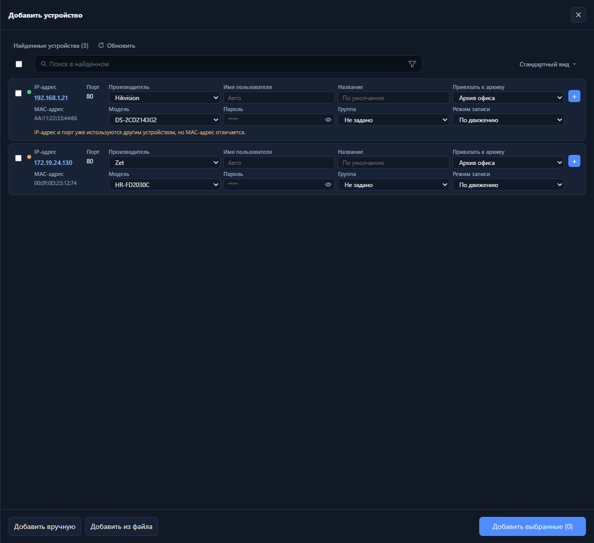
После старта — блок «Найденные устройства (N)», прогресс или кнопка «Обновить», список карточек с чекбоксами. Пока идёт опрос — полоса «Поиск…» и пометка «Поиск продолжается…» внизу списка.
Поведение
Поиск стартует при открытии мастера; результаты появляются порциями, индикатор прогресса 0–100%.
Обновить — повторный опрос (если поиск не идёт).
Остановить — прервать текущий опрос, оставить уже найденные строки.
Если архивов в системе нет — жёлтый баннер: камеры можно добавить, запись будет недоступна (ссылка в раздел архивов).
Устройство с тем же IP, портом и MAC, что уже в конфигурации, в списке не показывается (точный дубликат).
2. Статус поддержки и фильтры
Назначение. Отличать полностью поддерживаемые устройства от требующих ручной донастройки и от «без гарантии», и скрывать лишние категории из списка.
Где смотреть: цветная точка слева от карточки; воронка в строке «Поиск в найденном».
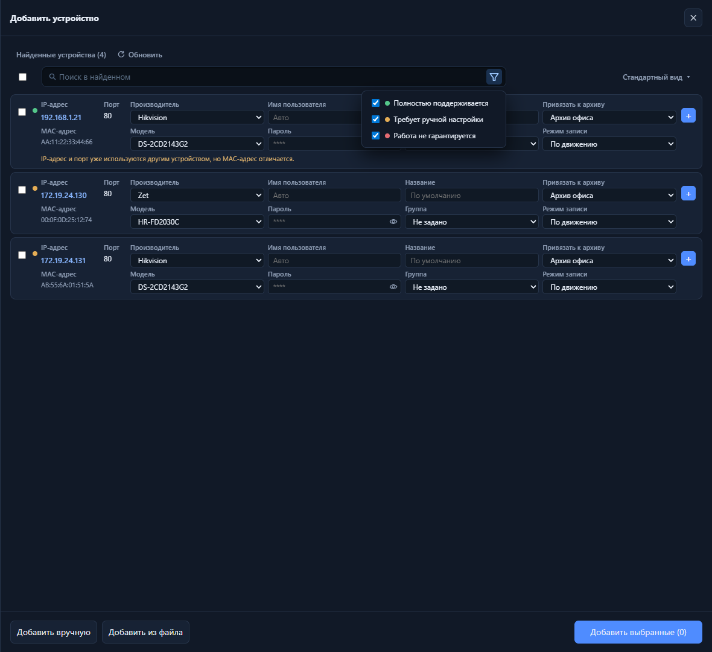
Меню воронки: три чекбокса — Полностью поддерживается, Требует ручной настройки, Работа не гарантируется. Точка на строке совпадает с категорией.
Поведение
По умолчанию включены все три категории.
Снятие категории скрывает такие строки из списка (учёт вместе с текстовым поиском).
Статус «не гарантируется»: карточка заблокирована, кнопка «+» неактивна, чекбокс недоступен.
3. Поиск в найденном и «только выбранные»
Назначение. Быстро сузить длинный список по IP, MAC, производителю, модели, имени из discovery; отдельно — временно показать только отмеченные чекбоксами строки (иконка-прицел).
Где смотреть: поле «Поиск в найденном»; справа в строке — прицел (только выбранные) и воронка статусов.
Поиск в найденном
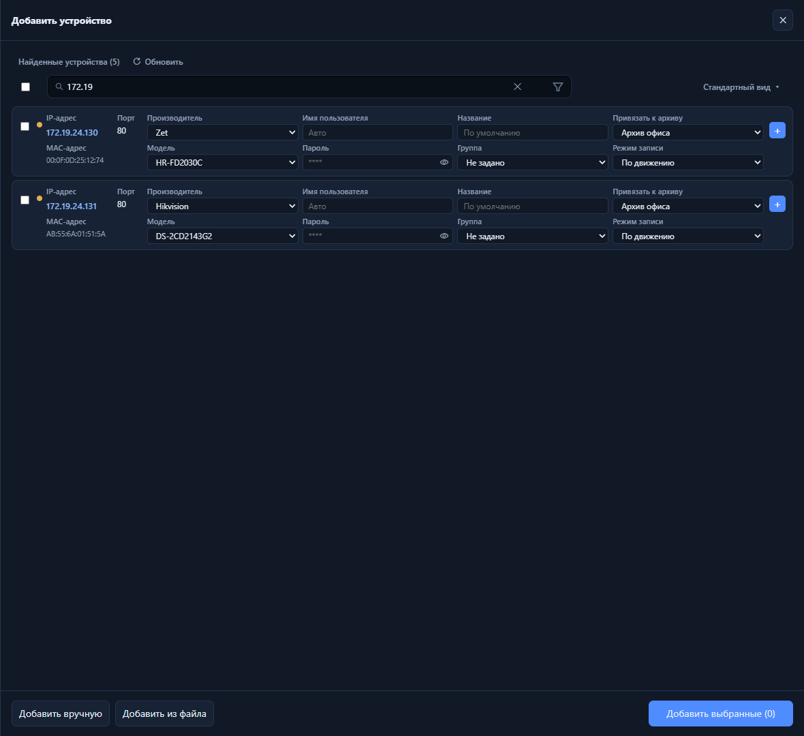
Пример: в поле введена часть IP — в списке остаются только подходящие строки (счётчик «Найденные устройства (N)» по-прежнему общий; пустой результат — текст «Устройства не найдены с учётом выбранных фильтров»).
Только выбранные
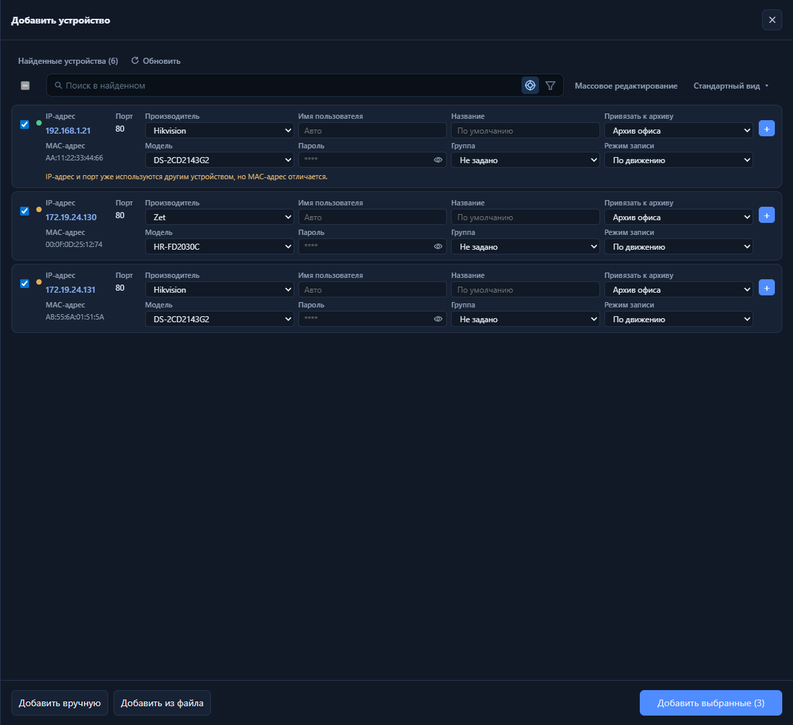
После выбора нескольких строк — активная кнопка-прицел: в списке только отмеченные; «выбрать все» в шапке отключён, пока режим включён.
Поведение
Фильтр не запускает новый сетевой опрос — только отбор по уже найденному списку.
MAC можно искать с разделителями или без (нормализация hex).
Прицел доступен, если отмечена хотя бы одна строка; повторное нажатие возвращает полный отфильтрованный список.
4. Вид карточек устройств
Назначение. Переключать плотность полей в каждой строке — от минимума для массового отбора до полного набора параметров перед добавлением.
Где смотреть: кнопка вида справа в панели над списком (название режима и ▾). Режим по умолчанию — Стандартный.
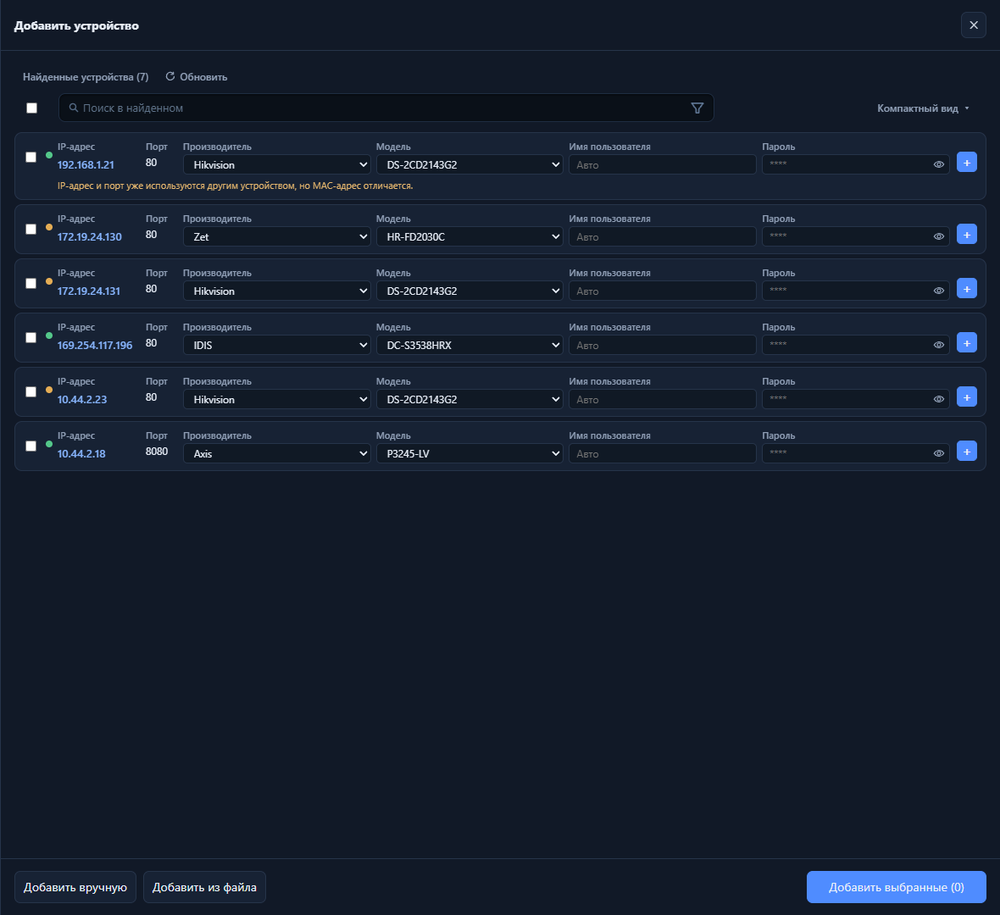
Компактный вид — IP, порт, производитель, модель, логин, пароль (без MAC, архива и геопозиции).
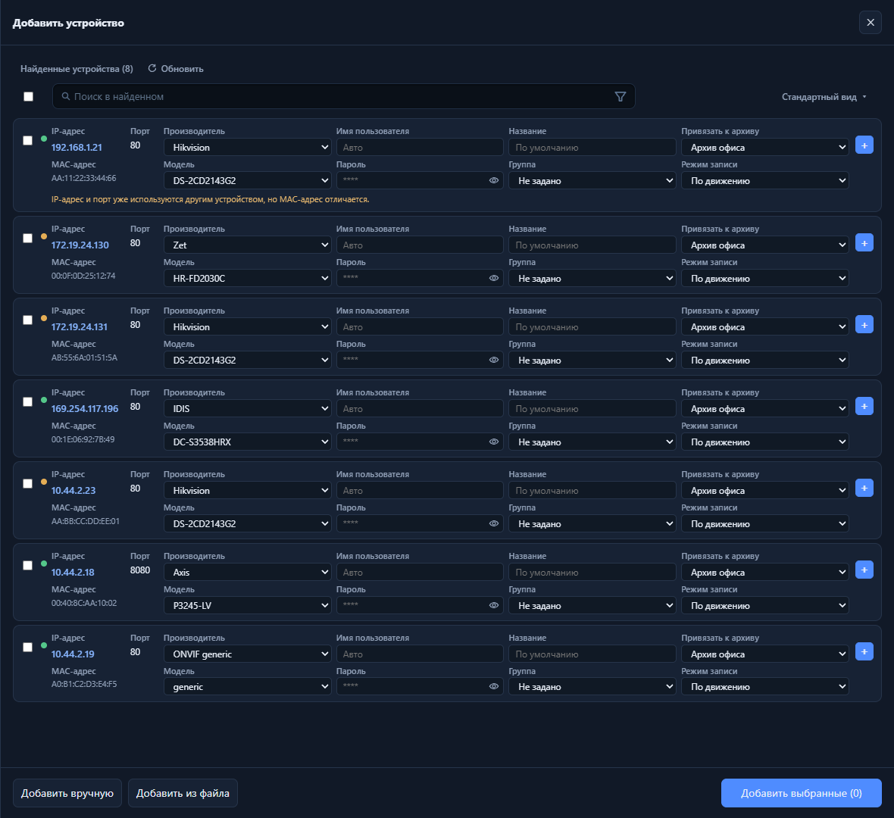
Стандартный вид — дополнительно MAC, название, группа, архив, режим записи.
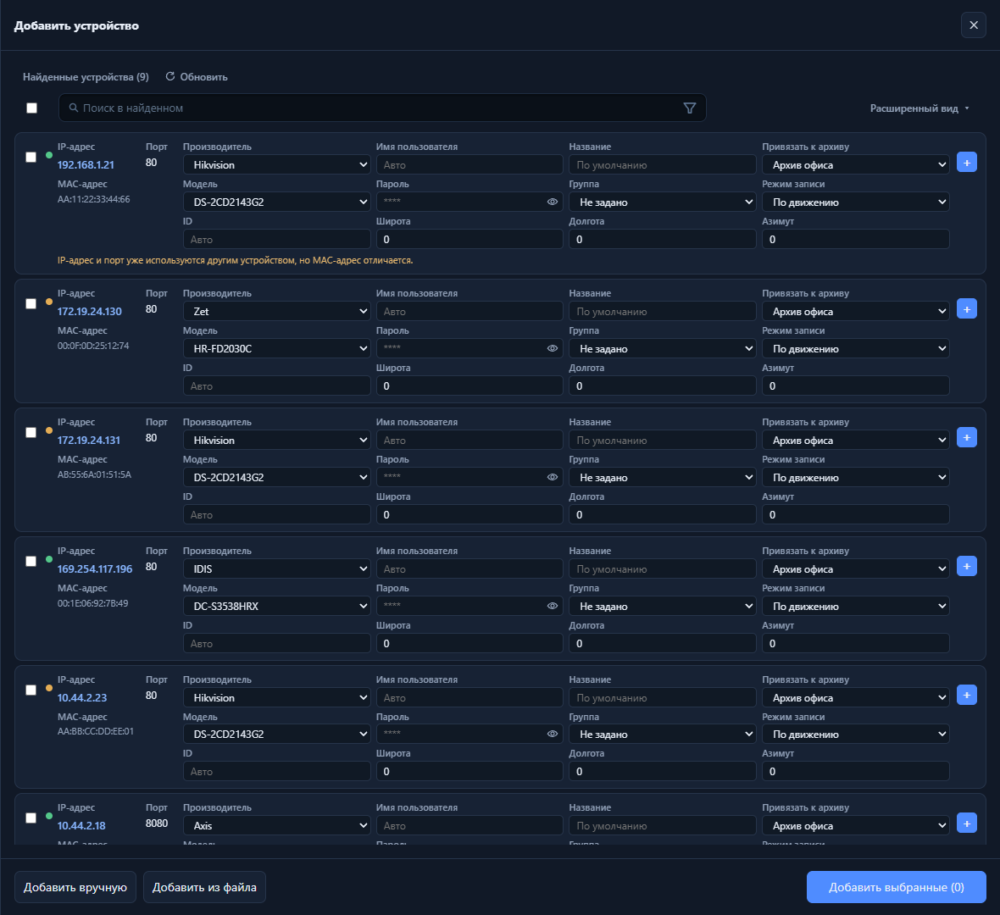
Расширенный вид — дополнительно ID, широта, долгота, азимут.
Поведение
Выбор запоминается на сессию мастера.
Редактирование полей в карточке доступно до добавления (кроме заблокированных строк).
Тот же режим влияет на раскладку панели массового редактирования.
5. Карточка строки и конфликты
Назначение. Перед добавлением задать учётные данные, архив, группу, имя и геопозицию; предупредить о коллизии адреса с другим MAC.
Где смотреть: тело строки в списке найденных; ссылка IP открывает web-интерфейс устройства в новой вкладке.
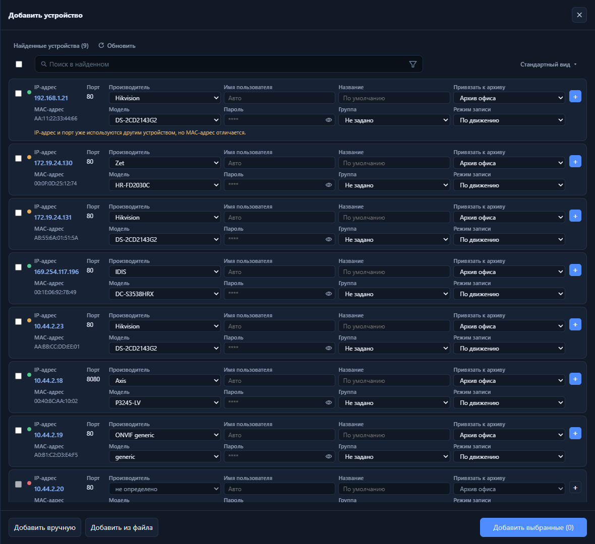
Поля производителя/модели — выпадающие списки (для «bad» — «не определено»). При совпадении IP+порт с другим MAC в конфиге — предупреждение под карточкой.
Поведение
Смена архива на «Не задано» сбрасывает режим записи в «Нет».
Режим записи «По движению» при поддерживаемых вендорах может создать встроенный детектор при добавлении.
Конфликт IP не блокирует добавление в макете, но предупреждает оператора.
6. Выбор и добавление в конфигурацию
Назначение. Отметить одно или несколько устройств и перенести их на сервер; одиночное добавление кнопкой «+» в строке.
Где смотреть: чекбоксы и «выбрать все»; кнопка «+» справа в строке; «Добавить выбранные (N)» внизу после завершения поиска.
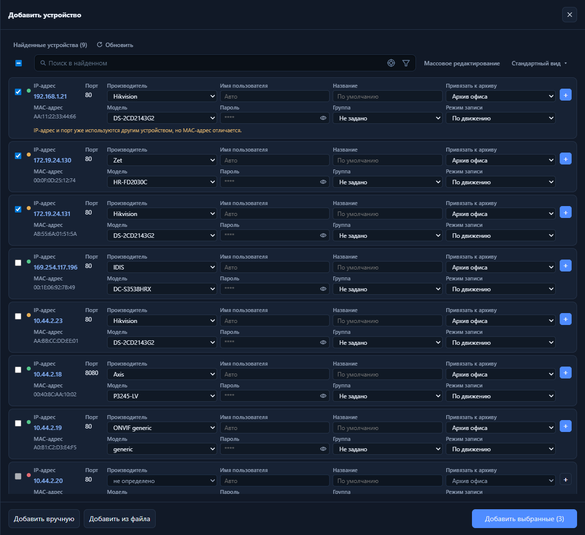
Несколько отмеченных строк → «Добавить выбранные (N)». После добавления — галочка «Добавлено» и переход к объекту в дереве; строка остаётся в списке, поля блокируются.
Поведение
«Выбрать все» относится к видимым и доступным строкам (не added, не bad).
Перед добавлением проверяются обязательные поля и уникальность ID (если задан вручную).
Одиночная «+» очищает прочее выделение и добавляет только эту строку.
Назначение. Одним действием проставить производителя, модель, учётку, шаблон названия, группу, архив и запись для всех выбранных строк.
Где смотреть: кнопка «Массовое редактирование» над списком (активна при N≥1); раскрывающаяся панель под панелью инструментов.
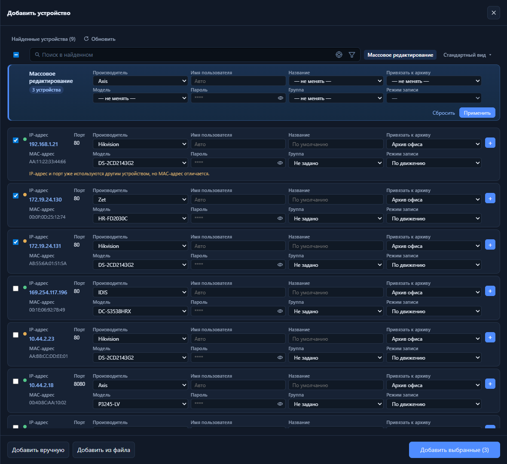
Форма-превью с полями «— не менять —»; Применить к выбранным; Сбросить очищает черновик панели. Название — шаблоны («По умолчанию», «{Модель} {IP}» и т.д.).
Поведение
Модель в массовой форме доступна после выбора производителя.
«Режим записи» активен только если в массовой форме или у строк уже выбран архив.
Пустая форма — toast «Укажите хотя бы один параметр».
После «Применить» значения попадают в карточки; добавление в конфиг — отдельно («Добавить выбранные»).
8. Добавление без логина и пароля
Назначение. Не блокировать учётную запись на камере при попытке подключения с пустыми или «Авто» учётными данными: предупредить оператора и добавить камеру в конфигурацию выключенной до ручного ввода логина/пароля в карточке.
Когда: нажатие «+» в строке или «Добавить выбранные», если у добавляемых строк не указаны имя пользователя и пароль (в макете — пусто или «Авто» без пароля).
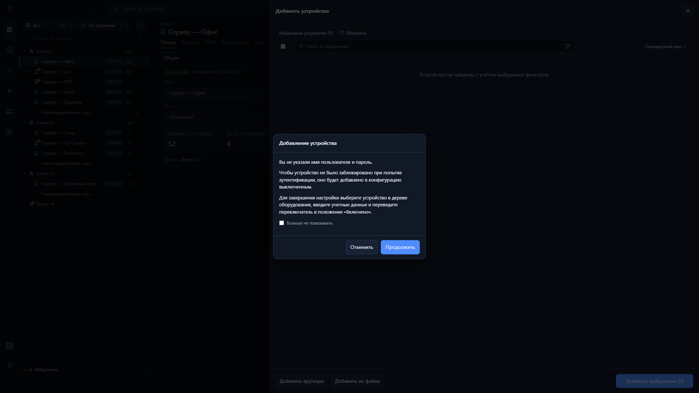
Одна камера: заголовок «Добавление устройства», пояснение про добавление выключенным, инструкция включить после ввода учётных данных в дереве; кнопки Отменить / Продолжить; опция «Больше не показывать».
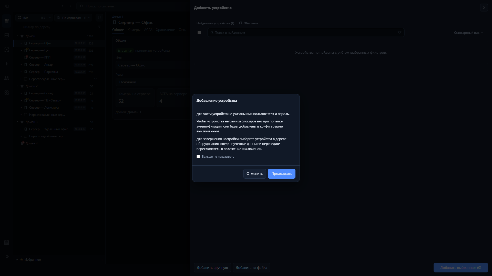
Несколько камер: формулировка «Для части устройств не указаны…» — тот же сценарий (добавление выключенными), одно подтверждение на пакет.
Поведение
Продолжить — добавление выполняется; в дереве переключатель «Включено» снят.
Отменить — камеры в конфиг не попадают.
Чекбокс «Больше не показывать» сохраняется в браузере; следующие добавления без пароля идут сразу, без диалога.
Кнопки «Добавить вручную» и «Добавить из файла» в подвале мастера — другие сценарии; в этом документе не описываются.